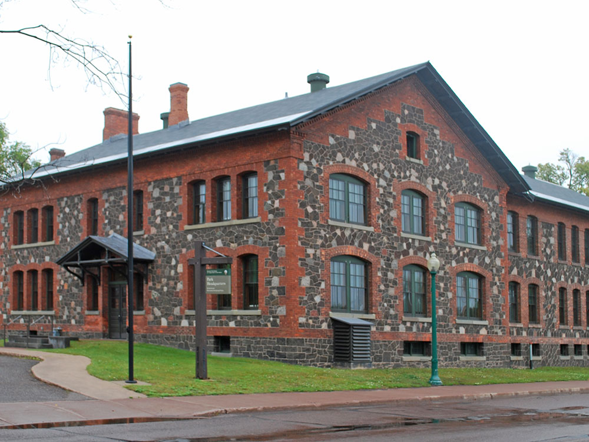
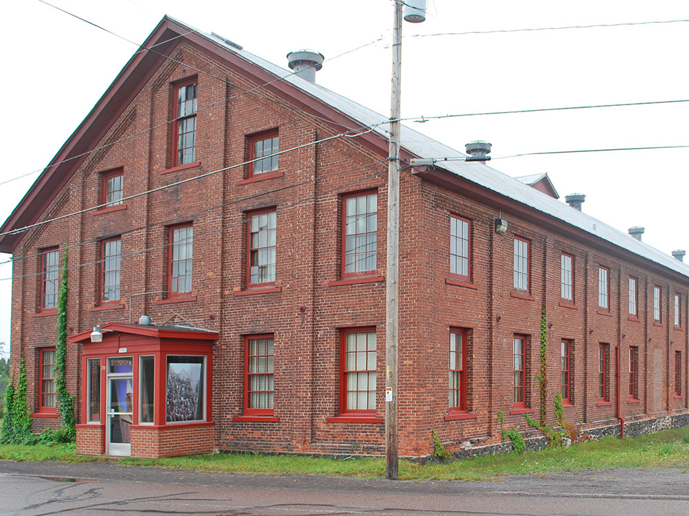
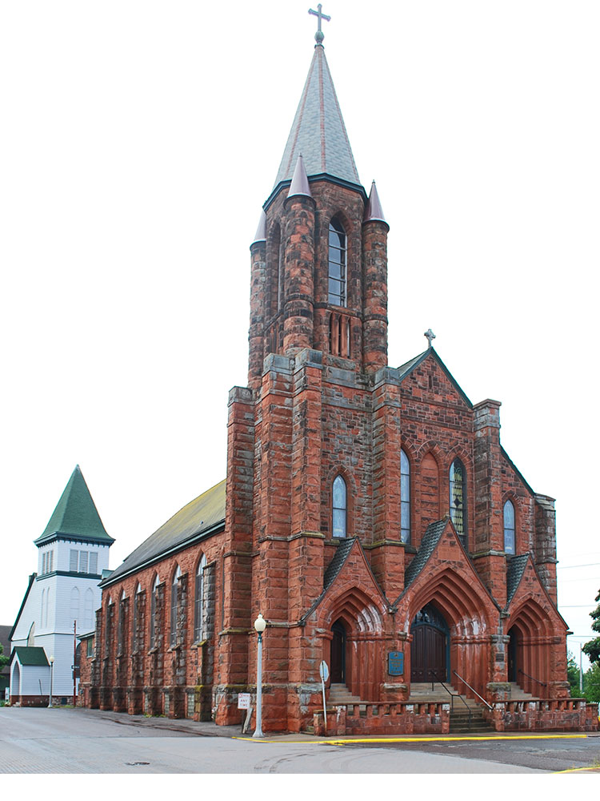
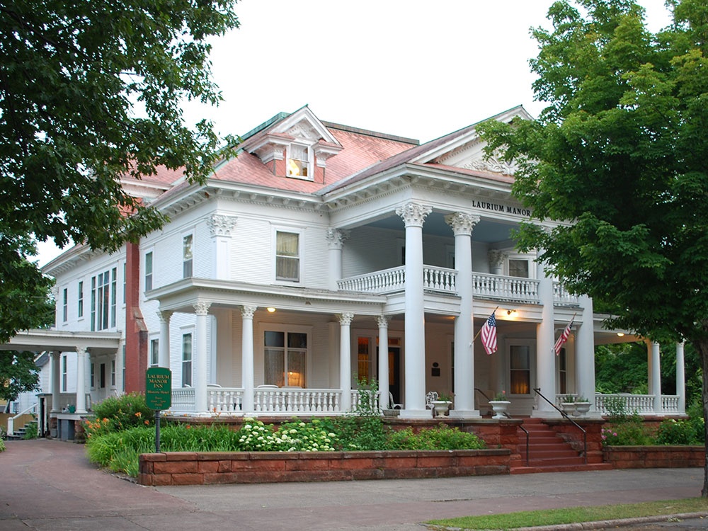

Park celebrates the life and history of the Keweenaw Peninsula and its copper mining heritage in the Upper Peninsula of Michigan
General Information
The Calumet Visitor Center operates on seasonal hours; during the main summer season it is generally open daily from 10:00am to 5:00pm.
Visitor Center: Free
No entrance fee is required to visit Keweenaw National Historical Park.
How to Get There
From AmericInn by Wyndham Calumet (approximately 1 mi): Head north on 6th Street toward downtown Calumet, continue to 5th Street, and follow signs to the Keweenaw National Historical Park Calumet Visitor Center at 98 5th Street.
Overview
Keweenaw National Historical Park is a unit of the National Park Service. Established in 1992, the park celebrates the life and history of the Keweenaw Peninsula in the Upper Peninsula of Michigan. As of 2009, it is a partly privatized park made up of two primary units, the Calumet Unit and the Quincy Unit, and 21 cooperating "Heritage Sites" located on federal, state, and privately owned land in and around the Keweenaw Peninsula. The National Park Service owns approximately 1,700 acres (690 ha) in the Calumet and Quincy Units. Units are located in Baraga, Houghton, Keweenaw, and Ontonagon counties.
The Keweenaw Peninsula is the site of the most extensive known deposits of native copper in the world. Occurring here in relatively pure form, the red metal could be broken out of the rock and worked to make a wide variety of products, from jewelry and tools by its earliest miners to coins and electric wire by its final generations. Keweenaw copper was mined for approximately 7,000 years, from 5000 BCE until 1968. During the period for which records were kept, 1840-1968, more than 11 billion pounds (5 million metric tons) of copper were mined here. During the peak production years of World War I, 1916-1917, the annual copper yield reached a maximum of 270 million pounds (125,000 t).
Many ethnic groups contributed to the heritage of the Keweenaw National Historical Park. Throughout the later half of the 19th century and the first two decades of the 20th, century, immigrants from across Europe migrated to the Keweenaw to work in the copper mines and mining communities. By 1910 the Copper Country had been settled by French Canadian, German, Chinese, Irish, Cornish, Croatian, Finnish, Italian, Greek and Syrian people.
Things to Do
Discover the Story of America's Copper Country
Keweenaw National Historical Park preserves and interprets the rich history of the Keweenaw Peninsula, one of the world's most important copper mining regions. Located in Michigan's Upper Peninsula, the park tells the story of the copper industry that transformed the area into a global mining center during the nineteenth and early twentieth centuries. Rather than being a single site, the park works with numerous partner attractions and historic districts throughout the region.
Explore the Calumet Historic District
The Calumet Unit is the park's primary visitor destination and features beautifully preserved historic buildings, museums, churches, and commercial structures from the Copper Boom era. Visitors can stroll through one of the most intact mining communities in America while learning about the people and industries that shaped the region.
Visit Historic Mining Sites
Keweenaw National Historical Park partners with several historic mining attractions, including Quincy Mine, Delaware Mine, and the Coppertown Mining Museum. These sites provide opportunities to explore mine shafts, view mining equipment, and learn about the technology and labor that powered the copper industry.
Experience the Keweenaw's Cultural Heritage
The park highlights the stories of Native Americans, immigrant communities, miners, business leaders, and families who contributed to the development of Copper Country. Exhibits and programs illustrate how people from around the world came to the Keweenaw to work, live, and build thriving communities.
Enjoy Scenic Drives and Outdoor Recreation
The Keweenaw Peninsula offers spectacular scenery, including Lake Superior shorelines, waterfalls, forests, and historic mining landscapes. Visitors often combine park exploration with hiking, biking, photography, and scenic drives throughout the peninsula.
Top Trails
Calumet Historic Walking Tour
Length: Approximately 1.5 miles
Elevation Gain: Minimal
Difficulty: Easy
This self-guided walking route explores downtown Calumet and highlights historic buildings, churches, commercial districts, and cultural landmarks associated with the copper mining era.
Quincy Mine Hoist Trail
Length: Approximately 1 mile round trip
Elevation Gain: Moderate
Difficulty: Easy to Moderate
Visitors can walk among historic mine structures while enjoying views of the Quincy Mine Hoist, one of the largest steam-powered mining hoists ever built. Interpretive displays explain the significance of the site and its role in the copper industry.
Estivant Pines Nature Sanctuary Trail
Length: Approximately 1.5 miles loop
Elevation Gain: Minimal
Difficulty: Easy
Located within the Keweenaw region, this trail passes through one of Michigan's finest old-growth white pine forests. Visitors can experience the natural environment that existed before large-scale mining and settlement.
Keweenaw Heritage Trail
Length: Variable distances available
Elevation Gain: Moderate
Difficulty: Easy to Moderate
This regional trail network connects historic mining sites, communities, museums, and scenic landscapes throughout the Keweenaw Peninsula. It provides an excellent way to explore both the cultural and natural history of Copper Country.
Sources: National Park Service official Keweenaw National Historical Park information, including details on the Calumet Historic District, Quincy Mine, copper mining history, visitor centers, partner heritage sites, and educational programs. https://www.nps.gov/kewe
Additional information verified through National Park Service visitor resources and Keweenaw Heritage Site partner information covering mining attractions, historic districts, walking tours, cultural history, and recreational opportunities throughout Michigan's Copper Country. https://www.nps.gov/kewe/planyourvisit
When news of the region's rich native copper was first widely published in the 1830s, many families from the English county of Cornwall immigrated to the Upper Peninsula, bringing the Cornish pasty and their region's knowledge of hard-rock mining with them. Several park Heritage Sites, including the log cabin village of "Old Victoria," recall Cornish heritage in the region.
The Calumet Unit of the Keweenaw National Historical Park includes many sites in and around the villages of Calumet and Laurium, human communities that have survived the shutdown of their parent employer, the Calumet and Hecla Mining Company, in 1968. By digging shafts into the rock, the men and owners of the Calumet & Hecla found geological formations of rock laced with nuggets of almost pure copper.
The Calumet & Hecla was the richest of the separate copper mines of the Keweenaw, and the towns built at the mine head reflect its productivity.
The Quincy Unit of the Keweenaw National Historical Park commemorates one of the most remarkable feats of engineering in northern Michigan, the 9,000-foot (2,700 m) deep Quincy Mine shaft. Nicknamed "Old Reliable" for its record of paying annual dividends for decades, the Quincy mine enjoyed a position on the rich copper rock of the Pewabic Lode. A private preservation foundation maintains the Quincy Mine's surface mine hoist, which is the largest steam-powered hoist in the world.
As of 2013, the Keweenaw National Historical Park operates in cooperation with 21 heritage sites in the Keweenaw Peninsula and nearby. The heritage site system was established in 2007 with an original set of 19 sites. In October 2013, two new sites were added: Houghton's Carnegie Museum and the Michigan Technological University Archives.
The Adventure Mining Company is in Greenland, Michigan. It operated in Greenland from 1850 until 1920, and consisted of five shafts, one of which descended 1,300 feet (400 m) beneath the surface. Although the site seemed promising, the mine never turned a profit. The Adventure Mining Company currently offers tours of the surface and underground portions of the Adventure Mine.
The A.E. Seaman Mineral Museum was located on the Fifth Floor of Electrical Resource Center at Michigan Technological University in Houghton, Michigan. As of 2011, it is now located across from the Advanced Technology Development Complex. The museum is named for Arthur Edmund Seaman, who worked at Michigan Tech in the late 19th and early 20th centuries, and was the museum's curator from 1928 to 1937.
The mineral collection was established in the 19th century, and by 1890 numbered 27,000 specimens. A museum to house the collection was constructed in 1908. The museum has since moved several times, and the collection has grown to over 30,000 specimens, of which 8,000 are on display. The museum features an extensive mineral collection and exhibits on copper formation, and has the world's best collection of crystallized native copper and native copper in crystallized calcite.
The Carnegie Museum in Houghton is a former Carnegie library and former home of the Portage Lake District Library. It is currently a museum focusing on local history.
The Calumet Theatre is in Calumet, Michigan, within the park's Calumet Unit. The theatre was built in 1899 and opened on March 20, 1900. It is the first municipally built theatre in the country. The theatre originally housed live theatre, attracting notable performers such as Frank Morgan (later famous for his roles in The Wizard of Oz), Douglas Fairbanks, Sr., Lon Chaney, Sr., John Philip Sousa, Sarah Bernhardt, and Madame Helena Modjeska among others. However, in the late 1920s, the theatre converted to a movie house, serving in this medium until the 1950s.
In 1975, the auditorium was restored for the centennial of Calumet. In 1988-89, the exterior of the theatre was restored.
The Chassell Heritage Center is located in Chassell, Michigan. The heritage center, located in a 1917 elementary school building, features exhibits that trace Chassell's history from a fishing and lumber town up to the present. It includes the Chassell Township Museum and the Friends of Fashion Vintage Clothing Collection.
The Copper Range Historical Museum is located Trimountain Avenue in South Range, Michigan. The museum is located in an old bank building and features exhibits on the Copper Range Company.
The Coppertown USA Museum is located in Calumet, Michigan, within the park's Calumet Unit. Coppertown USA is housed within the Calumet & Hecla Mining Company's old pattern shop. Exhibits span the range of the copper mining timeline, from prehistoric times to the present, but concentrate on the operations of the Calumet & Hecla Mining Company.
The Delaware Copper Mine is located off U.S. Highway 41 (US 41), 12 miles (19 km) south of Copper Harbor, Michigan. The Delaware Copper Mine provides tours of one of the oldest copper mines in the Keweenaw, dating back to 1846. The mine had five shafts, with the deepest reaching 1,400 feet (430 m). The mine is open June through October and offers guided and self-guided tours.
The Finnish American Heritage Center & Historical Archive is located on the campus of Finlandia University in Hancock, Michigan. The Finnish American Heritage Center includes a theater, an art gallery, and Historical Archives which house the largest collection of Finnish-North American materials in the world. The Finnish American Heritage Center links the Finnish community in America to the one in Finland through exhibits on Finnish history and tradition. The associated Historical Archive houses the largest collection of Finnish-North American materials in the world. This collection, established in 1932, currently houses 20,000 items, including genealogical resources, information about Finnish culture, artifacts, and Finnish-American artwork.
Fort Wilkins Historic State Park is located on US 41 in Copper Harbor, Michigan. The fort was built in 1844, and provided order and protected the Keweenaw's copper resources during the Civil War. The park also contains one of the first lighthouses on Lake Superior, and offers camping, fishing, hiking, swimming, and biking, and day-use facilities.
The Hanka Homestead is located approximately 3 miles (4.8 km) west of U.S. Highway 41, off Tower Road in Pelkie, Michigan. The Hanka Homestead is a Finnish-American "stump farm" homestead originally settled around the turn of the twentieth century. The farm was lived in by members of the Hanka family until 1966; the farm has been restored to its appearance in 1920.
The Houghton County Historical Museum is located in Lake Linden, Michigan. The museum houses over 100 years of photographs and artifacts with three floors of exhibits of local Copper Country mining, logging and cultural history. In addition, the Houghton County Historical Museum runs the 3 ft (914 mm) narrow gauge Lake Linden & Torch Lake Railroad, the Traprock Valley School House (a one-room school), the First Congregational Church in Lake Linden, Michigan (used as the HCHS Heritage Center), the Leo Chaput Log Cabin, and the Perl Merrill Research Center (used as the archives and a genealogical facility).
The Keweenaw County Historical Society, established in 1981, has five locations throughout Keweenaw County, Michigan. These locations include the Eagle Harbor Lighthouse, Central Mine Historic District, Phoenix Church, the Rathbone School and the Bammert Blacksmith Shop. Visitor Centers for the Historical Society are located at the Eagle Harbor Lighthouse and Central Mine. Their sites are open from June through October.
The Keweenaw Heritage Center is located in the old Ste. Anne's church in Calumet, Michigan, within the park's Calumet Unit. Ste. Anne's was built in 1900 as a French Canadian Roman Catholic church and deconscrated in 1966. It was underutilized for a number of years until, in 1994, a group of local citizens bought the building.
The Laurium Manor Inn is located in Laurium, Michigan. The 13,000-square-foot (1,200 m2) structure was built as a home by wealthy mining captain Thomas H. Hoatson in 1908. The house functions as a bed and breakfast and is open to the public for tours.
Old Victoria is located at Victoria Dam Road in Rockland Township, Michigan. The site features a group of small log houses which were once used by miners of the Victoria Mining Company. These cabins were built in 1899 and abandoned in 1921. The structures were restored in the 1970s, and tours through the cabins and the mine site beyond are available.
The Ontonagon County Historical Society is located in Ontonagon, Michigan. The Ontonagon County Historical Society was founded in 1957 "to collect and preserve the artifacts of the county's history and to educate the public about that history and related topics." Exhibits at the historical society's museum include artifacts related to the early days of mining and other topics. The Society also operates the Ontonagon Lighthouse, constructed in 1851-52. The Society acquired the lighthouse in 2000, and offers tours in the summer months.
Porcupine Mountains Wilderness State Park is located west of Ontonagon, Michigan on Michigan State Route 107. The park totals 59,000 acres (24,000 ha) and offers day-hiking, backpacking, camping, canoeing, biking and winter sports. There are also numerous historical copper mining sites within the park, as well as stands of virgin timber.
The Quincy Mine Hoist and Underground Mine is located in Hancock, Michigan, within the park's Quincy Unit. The company offers tours through the surface buildings of the Quincy Mine as well as underground tours.
The Upper Peninsula Firefighters Memorial Museum is located at 327 Sixth Street in Calumet, Michigan, within the park's Calumet Unit. The second floor of the building holds exhibits on the history of fire fighting in Michigan's Upper Peninsula.
This article uses material from the Wikipedia article "Keweenaw National Historical Park", which is released under the Creative Commons Attribution-Share-Alike License 3.0






